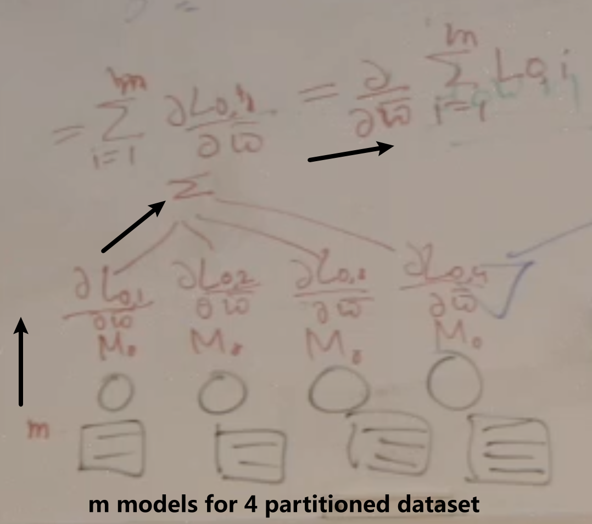

GPU训练
Contents
GPU训练¶
基础¶
Single Node, Single GPU Training¶
Training throughput depends on:
Neural network model (activations, parameters, compute operations)
Batch size
Compute hardware: GPU type (e.g., Nvidia M60, K80, P100, V100)
Floating point precision (FP32 vs FP16)
换了FP16之后相当于working with reduced precision arithmetic｜Using FP16 can reduce training times and enable larger batch sizes/models without significantly impacting the accuracy of the trained model
训练时间：Training time with single GPU very large: 6 days with Places dataset (2.5M images) using Alexnet on a single K40.
提高performance的办法一般是Increasing batch size increases throughput
然而Batch size is restricted by GPU memory！
GPU的限制下⇒Small batch size \(=>\) noisier approximation of the gradient \(\Rightarrow\) lower learning rate \(=>\) slower convergence
DL Scaling with GPU¶

对比单GPU的提升¶

不同模型的speedup不一样，因为different networks have different structure, they have different amount of floating point operations requirement, they have different memory requirement
 - 从batch size提高后的improve来看也是一样的model dependent！
- 从batch size提高后的improve来看也是一样的model dependent！
Single Node, Multi-GPU Training¶
最重要的是communicate的cost！让Scaling not linear的各种影响因素——Synchronization
Communication libraries (e.g., NCCL) and supported communication algorithms/collectives (broadcast, all-reduce, gather)
NCCL (“Nickel”) is library of accelerated collectives that is easily integrated and topology-aware so as to improve the scalability of multi-GPU applications
Communication link bandwidth: PCle/QPI or NVlink
Communication algorithms depend on the communication topology (ring, hub-spoke, fully connected) between the GPUs.
Most collectives amenable to bandwidth-optimal implementation on rings, and many topologies can be interpreted as one or more rings [P. Patarasuk and X. Yuan]

V100优势在于GPU和GPU之间的connectivity很好
没有NVLINK的时候：

有NVLINK的时候：


Distributed Training¶
multiple nodes in multiple machines (GPUs): parallelism by distributing your job across multiple machines
Partition and synchronize:¶
Type of Parallelism: Model, Data, Hybrid
Data Parallelism: partition the data set across multiple machines and then each one of them can do the training using that dataset (但是有整个model)
Model Parallelism: train portions of a big model on different machines (但用整个dataset)
Hybrid: partition the model and also partition the data.
Aggregation¶
目的
Average model得不到我们想要的global的model：partition之后即使每个模型看到的local sub-dataset的分布一样，但因为features的区别还是会train出不一样的parameters. 因为每个local model不会向总体generalize，所以Averaging them之后也不会generalized
因此，我们想要的是train一些iterations之后就做synchronize, 假设不分batch，做data parallelism的时候：
 开始先initialize with same weight
forward pas get the loss
backward get the gradient
sum the gradient （会\(\iff\)用总loss算的gradient）
然后让每个submodel从这套parameter再继续迭代
如果分了batch size n：
那就总共就pass \(n \times m\)个samples
得到\(n \times m\)个gradients
再计算\(\frac{\partial}{\partial w} \sum_{i=1}^{m} \sum_{j=1}^{n}Loss_{i, j}\)
Type of Aggregation: Centralized, decentralized
Centralized aggregation: parameter server——就是把gradient传送到centralized server，center的只maintain model parameter不做training
Decentralized aggregation: P2P, all reduce——直接让workers之间交流实现aggregation

Performance metric: Scaling efficiency：¶
batch size一样的话：对于n个GPU来说 是\(n \times\) Single GPU batch size，但是是parallel进行，所以每个GPU还是处理一样的数据！因此时间in 2 cases应该是一样的 \(\Rightarrow \text{scaling efficiency} = 1\)
然而，GPU中需要communication的时间——Sychronize to get an aggregated gradient，所以会有更长的时间！ \(\Rightarrow \text{scaling efficiency} < 1\)
Parallelism¶
Parallel execution of a training job on different compute units through
scale-up (single node, multiple and faster GPUs)：让one machine的比如4个GPU 连接很快，实现powerful
scale-out (multiple nodes distributed training) ：用多个machine（nodes），可能每个都不是很贵但可以堆，不过这样network会成为bottleneck
方式：
Enables working with large models by partitioning model across learners
Enables efficient training with large datasets using large “effective” batch sizes (batch split across learners)
Speeds up computation
Model Parallelism¶
Splitting the model across multiple learners，比如下面这个5层神经网络分给4个learner（learner之间连接加粗）
做Partition的criteria
minimize这些bold edges
也就是keep the nodes densely connect to each other in a same machine ⇒ exploit machine 的local compute power
Performance benefits depend on
Connectivity structure
Compute demand of operations
Heavy compute and local connectivity -benefit most
Each machine handles a subset of computation
Low network traffic
Data Parallelism¶

Model is replicated on different learners
Data is sharded and each learner work on a different partition
Helps in efficient training with large amount of data
Parameters (weights, biases, gradients) from different replicas need to be synchronized
Parameter server (PS) based Synchronization¶
Synchronous SGD¶
Synchronous: at any instance of time the model at each of the workers is same (always working on the same model)
Each learner executes the entire model
After each mini-batch processing a learner calculates the gradient and sends it to the parameter server
The parameter server calculates new value of weights and sends them to the model replicas
模型太大的问题：partition into model shards，这样一个机器只用responsible for maintaining some parameters
沟通问题：当模型数量很大的时候，bottleneck可能会变成bandwidth
内存问题：模型很大的时候没法fit in single machine
注意 比如每个模型10000个weight，100个模型，那parameter serve需要先接受100*10000，再average成10000个weight
Straggler problem问题：PS needs to wait for updated gradients from all the learners before calculating the model parameters在center收集gradient的时候learner只能idle 等最慢的worker好了然后得到new parameter完成一次iteration
具体解释：
Even though size of mini-batch processed by each learner is same, updates from different learners may be available at different times at the PS
Randomness in compute time at learners
Randomness in communication time between learners and Parameter Server
Waiting for slow and straggling learners diminishes the speed-up offered by parallelizing the training
解决方案1——Synchronous SGD Variants

P: total number of learners
K: number of learners/mini-batches the PS waits for before updating parameters
Lightly shaded arrows indicate straggling gradient computations that are canceled.K-sync SGD: PS waits for gradients from K learners before updating parameters; the remaining learners are canceled
When K = P, K-sync SGD is same as Fully Sync-SGD
K-batch sync: PS waits for gradients from K mini-batches before updating parameters; the remaining (unfinished) learners are canceled
特点
Irrespective of which learner the gradients come from
Wherever any learner finishes, it pushes its gradient to the PS, fetches current parameter at PS and starts computing gradient on the next mini-batch based on the same local value of the parameters
Runtime per iteration reduces with K-batch sync; error convergence is same as K-sync
解决方案2——Asynchronous SGD and variants
Async-SGD: do not need to guarantee that all the workers locally are working with the same model
跟1-sync-SGD的异同：同样只用等一个model的结果，但不会把这个结果update到所有的learner而kill慢learner的结果，而是
K-async SGD: PS waits for gradients from K learners before updating parameters but the remaining learners are not canceled; each learner may be giving a gradient calculated at stale version of the parameters
When \(K=1\), K-async SGD is same as Async-SGD
When \(K=P\), K-async SGD is same as Fully Sync-SGD
K-batch async: PS waits for gradients from K mini-batches before updating parameters; the remaining learners are not canceled
Wherever any learner finishes, it pushes its gradient to the PS, fetches current parameter at PS and starts computing gradient on the next mini-batch based on the current value of the PS
Runtime per iteration reduces with K-batch async; error convergence is same as K-async
Sync VS Async¶
效率的考虑¶
Sync-SGD的slowdown在研究中的结果：
Theorem
Let the wall clock time of each learner to process a single mini-batch be \(i.i.d .\) random variables \(X_{1}, X_{2}, \ldots, X_{P}\). Then the ratio of the expected runtimes per iteration for synchronous and asynchronous \(S G D\) is $\( \frac{\mathbb{E}\left[T_{\text {Sync }}\right]}{\mathbb{E}\left[T_{\text {Async }}\right]}=P \frac{\mathbb{E}\left[X_{P: P}\right]}{\mathbb{E}[X]} \)$
\(X_{(P: P)}\) \(P^{t h}\) order statistic of \(P\) i.i.d. random variables \(X_{1}, X_{2}, \ldots, X_{P}\).
这个等式在说：快的倍数=个数×最慢的那个除平均的
For \(X_{i} \sim \exp (\mu) : \frac{\mathbb{E}\left[T_{\text {Sync }}\right]}{\mathbb{E}\left[T_{\text {Async }}\right]} \sim P \log P\) 也就是说Sync的时间是Async的时间的倍数=最慢的名次 * log最慢的名次
20个Processor的时候 Sync的等最慢的那个 Async的可以跑100次了
在学习率一样的时候，Async-SGD decay更快但是有higher error floor
就是说：Async可以在同样的时间做更多的epoch所以converge得更快，但final training error就不一定了
Trade-off在K不同的时候：
Recall: Async等到K个之后不会Kill其他的，而是让他们继续，然后等下一波K个无论是哪个批次的Loss function出来的gradient，因此Async肯定要比Sync快！
K=1的时候是一样的
K很大 一直到样本size的时候，如果batches are independent, it doesn’t matter whether the K gradients are coming from the same or differnt learners，所以两者的convergence接近。但Async的还是快
Stale Gradients¶
尽管单位时间 Async更多update会让model收敛更快，但也会遇到新的Stale Gradients的问题

PS updates happen without waiting for all learners ⇒ Weights that a learner uses to evaluate gradients may be old values of the parameters at PS
Parameter server asynchronously updates weights
By the time learner gets back to the PS to submit gradient, the weights may have already been updated at the PS (by other learners)
Gradients returned by this learner are stale (i.e., were evaluated at an older version of the model)
Stale gradients can make SGD unstable, slowdown convergence, cause sub-optimal convergence (compared to Sync-SGD)
这个gap有多大呢?Gupta el al. Staleness-aware Async-SGD for Distributed Deep Learning. 2016这篇论文做了衡量
结论：The gradient is on average \(\frac{N \text{(number of learners)}}{K \text{(等多少个update)}}\) steps out of date by the time they are applied to the global parameter vector.
结论指导我们 结果不好的时候可能是我们做update基于的learner太少了
此外，还可以设置Staleness dependent的decreasing learning rate： $\( \text { learning rate }(\alpha)=\frac{\text { base learning rate }\left(\alpha_{0}\right)}{\text { average staleness }(\langle\sigma\rangle)} \)$
n是多少个soft-sync；Number of learners \(\lambda=30\); mini-batch size \(\mu=128\).
效果: Dividing the learning rate by the average staleness ⇒ better convergence (achieves lower test error when using the \(n\)-softsync protocol)
With staleness-dependent learning rate setting Async-SGD can achieve accuracy comparable to Sync-SGD while achieving linear speedup of ASGD
还有一个方法再考虑进weight的差别有多大
\(\eta_{j}\) : learning rate at jth iteration of parameters at PS 注意——same for different model parameters
\(w_{j}\) : parameter value at jth iteration at PS
\(w_{\tau(j)}\) : parameter value used by the local learner (to calculate gradient) whose gradient pushing triggered jth iteration at PS
C: hyperparameter
效果：更stable的convergence
Decentralized Aggregation - Peer-to-peer¶
Every one sends to every one:
所以可以locally update weight！好处是parameter server不是bottleneck了，问题是communications比较高
解决这个问题：compresse updates
接下来：看一系列解决distributed training的问题的大厂paper
Downpour SGD¶
架构¶
Parameter、Model和Data 的partition一起做：
Model是Tensorflow的前身——DistBelief
一个Parameter Server shard只会看一部分的parameter
一个Model replica里面的四个小方块儿可以理解为在处理四部分的parameters 但最后一个learner会把所有的weight一起给parameter server（然后各个shard再去负责自己部分的数据接收、新weight计算和返回！）
Different PS shards update their parameters asynchronously, they do not need to communicate among themselves：因为每个PSshard只关心自己那part的parameter
Different model replicas run independently：Their only job is to calculate the gradient, to push the gradient through the parameter server or the shard and to get the updated model. And once they have done model, then they started to start doing the next iteration. 不需要coordination
Model replicas are permitted to fetch parameters and push gradients in separate threads. 意义：做完一个PS shard的weight update之后可以先开始下载它返回的新model的那部分parameter，等这个model replica更新完最后一个PS shard负责的parameter之后就基本只用等它的下载了
Tolerates variances in the processing speed of different model replicas：因为不需要wait！如果有个model fail，training也不会失败，但就是我们不会学习到给这个model的那部分数据了！
Tolerates failure of model replicas; More robust to machine failures than synchronous SGD.：Suppose some replica dies, you can bring back by bringing up another machine and get the model from the parameter server, share to the current model so that they will resume. 只用等待就可以了
Stochasticity的来源¶
Model replicas will most likely be using “stale” parameters when calculating gradients locally
No guarantee that at any given moment the parameters on each shard of the parameter server have undergone the same number of updates. 因为K个参数 每个模型push K个 谁先到谁就update 但先到的那个会影响后到的那个的update结果
Order of updates may be different at different PS shards
Optimizer：Adagrad learning rate
$\(
\eta_{i, k}=\frac{\gamma}{\sqrt{\sum_{j=1}^{k} \Delta w_{i, j}^{2}}}\)$
\(\eta_{i, k}\) : learning rate of the ith parameter at iteration k
\(\Delta w_{i, k}\) is its gradient
\(\gamma\) is the constant scaling factor
improves robustness of Downpour SGD (Adagrad implemented locally within each parameter server shard, 所以也不用等！)
Effective learning rate ‘decreases very fast because of gradient accumulation from the beginning of training
随着迭代进行，cumulative square sum分母增加所以learning rate 的decrease
Sparse的时候Adam好用：有些feature一直大，learning rate就会被压低！如果有些没啥用的，learning rate就会增大
give frequently occurring features very low learning rates and infrequent features high learning rates
the learning rate adaptation facilitates finding and identifying very predictive but comparatively rare features
表现评估¶
Scaling with Model Parallelism
Average training speed-up: the ratio of the time taken per iteration using only a single machine to the time taken using \(N\) partitions (machines)
Benefit diminishes when adding more machines:
Less work per machine
Increased communication between machines
Speed-up with model parallelism对不同的模型不同：
Fully connected speech model with 42M parameters: \(2.2 \times 8\) machines
Locally connected image model with 1.7B parameters: \(12 x\) with 81 machines
Scaling with Downpour SGD
Runtime-Resource Tradeoff in Downpour SGD
Points closer to the origin are preferable in that they take less time while using fewer resources.
Distributed Scaling Speed up¶
Reduction over gradients的原理¶
To synchronize gradients of \(N\) learners, a reduction operation needs to be performed $\( \sum_{j=1}^{N} \Delta w_{j} \)$
之前的办法是parameters server（左）
现在用新的——logical ring
Each node has a left neighbor and a right neighbor
Node only sends data to its right neighbor, and only receives data from its left neighbor
Both PS and Ring all-reduce involve synchronous parameter updates
Ring All-Reduce的Two Step algorithm
Scatter-reduce: GPUs exchange data such that every GPU ends up with a chunk of the final result
N - 1 rounds，每次send \(\frac{N}{P}\)个parameter，比如这里就是4轮 假设100个参数 每次传20个加到下面的GPU去
Allgather: GPUs exchange chunks from scatter-reduce such that all GPUs end up with the complete final result.

N - 1 rounds
Parameter Server和Ring All-Reduce的communication cost比较
P: number of processes N: total number of model parameters
PS (centralized reduce)需要 \(2 N(P-1)\)
Amount of data sent to PS by (P-1) learner processes: N(P-1)
After reduce, PS sends back updated parameters to each learner
Amount of data sent by PS to learners: N(P-1)
Ring All-Reduce (decentralized reduce) 需要 \(2 N(P-1) / P\)
Scatter-reduce: Each process sends N/P amount of data to (P-1) learners - Total amount sent (per process): N (P-1)/P
AllGather: Each process again sends N/P amount of data to \((P-1)\) learners
结论：PS communication cost is proportional to \(P\) whereas ring all-reduce cost is practically independent of \(P\) for large \(P\) (ratio (P-1)/P tends to 1 for large \(P\) )
在DL上的应用：Backpropagation
Backpropagation computes gradients starting from the output layer and moving towards in the input layer
Gradients for output layers are available earlier than inner layers
Start all reduce on the output layer parameters while other gradients are being computed
Overlay of communication and local compute: 最终我们需要所有的gradient做all-reduction，但是我们可以不用等，比如Output往前的gradient算好了就开始reduction，然后继续往前backpropagate。相当于gradient计算完成的时候，就只差input layer的all-reduce没做其他都做好了
Demonstrated training of a ResNet-50 network in one hour on 256 GPUs
Major techniques:
Data parallelism （没有model)
Very large batch sizes
Learning rate adjustment technique to deal with large batches
Gradual warm up of learning rate from low to high value in 5 epochs
MPI_AllReduce for communication between machines
NCCL communication library between GPUs on a machine connected using NVLink
Gradient aggregation performed in paralle/ with backprop
No data dependency between gradients across layers?
As soon as the gradient for a layer is computed, it is aggregated across workers, while gradient computation for the next layer continues (就是用了overlap of communication and local compute)
实际效果验证¶
模型设置
Each server contains 8 NVIDIA Tesla P100 GPUs interconnected with NVIDIA NVLink
32 servers × 每个server 8个 = 256个P100 GPUs
50 Gbit Ethernet
Dataset: 1000-way ImageNet classification task; 28 million training images; 50,000 validation images; top- 1 error
ResNet-50
Mini-batch size per GPU: 32 (fixed, weak scaling across servers)
optimizer: Caffe2
Learning rate: \(\eta=0.1 \cdot \frac{k n}{256}\)
这个例子里 学习率是0.1
k = batch size per GPU(worker) 就是32
n = 8个GPU（1个server）
如果用 2个server, 学习率是0.2
n = 16
k = 32
总之学习率跟n和k是成正比的
Large Minibatches的Linear Scaling Rule: When the minibatch size is multiplied by \(k\), multiply the learning rate by \(k\).
\(w_{t+1}=w_{t}-\eta \frac{1}{n} \sum_{x \in \mathcal{B}} \nabla l\left(x, w_{t}\right)\)
Average gradient of \(\mathcal{B}\) batches
Suppose, \(\nabla l\left(x, w_{t}\right) \approx \nabla l\left(x, w_{t+j}\right)\) for \(j<k\), then \(\hat{w}_{t+1} \approx w_{t+k}\) 这个时候可以偷懒:
从\(w_{t+k}=w_{t}-\eta \frac{1}{n} \sum_{j<k} \sum_{x \in \mathcal{B}_{j}} \nabla l\left(x, w_{t+j}\right)\) 从j到k一个一个算梯度
⇒ \(\hat{w}_{t+1}=w_{t}-\hat{\eta} \frac{1}{k n} \sum_{j<k} \sum_{x \in \mathcal{B}_{j}} \nabla l\left(x, w_{t}\right)\) 用t的梯度近似之前的梯度
⇒ \(\hat{\eta} = k \times \eta \)
用32个servers的效果是最好的：
Runtime scaling的情况：
Why time per iteration increases little with increasing minibatch size?：更多的machine需要communicate the gradients更多
Why time per epoch decreases with increasing batch size ? ：虽然单个iteration时间小小增加，但是number of iterations减少了很多
With 44 servers how much time it takes to finish 1 epoch of training ?：352的GPU的话 一个epoch 0.5秒
Can you get throughput (images/sec) from time per epoch ? Do you need to know batch size ?：能算！
Can you get throughput (images/sec) from time to process a minibatch (iteration)? Do you need to know batch size?
If K-batch sync or K-sync (K < number of servers) was applied would the convergence been faster ? What about the final training error ?
会converge faster但是final error不一定
PowerAl DDL¶
IBM

Benchmarking的术语¶
Speedup：\(\frac{\text{1 machine的time per iteration}}{\text{n machine的time per iteration}}\)
Scaling efficiency：\(\frac{\text{run time of one iteration on a single GPU}}{\text{run time of one iteration when distributed over N GPUs}}\) ??? \(\frac{\text{n machine的throughput}}{\text{1 machine的throughput}}\)
One can satisfy any given scaling efficiency for any neural network by increasing the batch size and reducing communication overhead
But Too big a batch size will result in converging to an unacceptable accuracy or no convergence at all
throughput：how many images propcessed in 1 sec
比如n machine，batchsize/machine=B，那就是\(\frac{n \times B}{\text{one iteration across n machine }T(n)}\)
n machine，batchsize=B，那就是 \(\frac{1 \times B}{\text{one iteration across 1 machine }T(1)}\)
Scaling efficiency：\(\frac{\text{n machine的 throughput}}{\text{1 machine的throughput}}\) = \(\frac{\frac{n \times B}{T(n)}}{\frac{1 \times B}{T(1)}}\)=\(\frac{n \times T(1)}{T(n)}=n\times\) speedup
Speedup = \(\frac{m \times \text{time for iteration of 1 machine}}{\text{time for iteration of m machine}}\)
Accuracy and end-to-end training time
训练快是一回事，后面的怎么样！
还有一些DL System performance的factor
Neural network
Deep learning framework \(\quad J P\)
GPU type
Communication overhead
当计算时间太长的时候，会dominate！
Other considerations
Systems under comparison should train to same accuracy
Accuracy should be reported on sufficiently large test set
Compute to communication ratio can vary widely for different neural networks. Using a neural network with high compute to communication ratio can hide the ills of an inferior distributed Deep Learning system.
a sub-optimal communication algorithm or low bandwidth interconnect will not matter that much
Computation time for one Deep Learning iteration can vary by up to \(50 \%\) when different Deep Learning frameworks are being used. This increases the compute to communication ratio and gives the inferior distributed Deep Learning system an unfair uplift to the scaling efficiency.
A slower GPU increases the compute to communication ratio and again gives the inferior distributed Deep Learning system an unfair uplift to the scaling efficiency.
Nvidia P100 GPUs are approximately 3X faster than Nvidia K40 GPUs.
When evaluating the communication algorithm and the interconnect capability of a Deep Learning system, it is important to use a high performance GPU.
Communication overhead = run time of one iteration when distributed over N GPUs \(-\) run time of one iteration on a single GPU.
一个machine batch size 256， n个machine的batch size是n \times 256，但是每个machine还是working on 256 batchsize，所以这里的increase of time是来自于communication带来的！
Includes the communication latency and the time it takes to send the message (gradients) among the GPUs.
Communication overhead gives an indication of the quality of the communication algorithm and the interconnect bandwidth.
实际结果¶

右边的Torch implementation, the reduction of gradients is not overlapped with compute; scaling efficiency is 84% vs 95% with Caffe


Meaningful Distributed DL System Comparison¶
A popular neural network that has been widely trained and tuned
Use a Deep Learning framework that is computationally-efficient
Train to best accuracy on high performance GPUs
Report:
Accuracy achieved
Training time to attain the accuracy
Scaling efficiency
Communication overhead
Metric may also include power and cost.